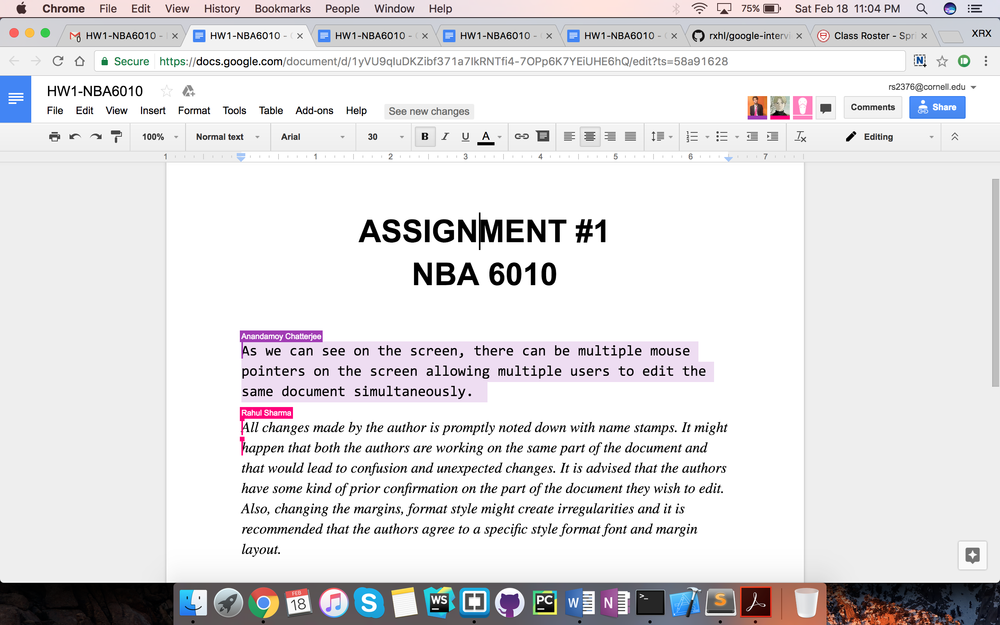
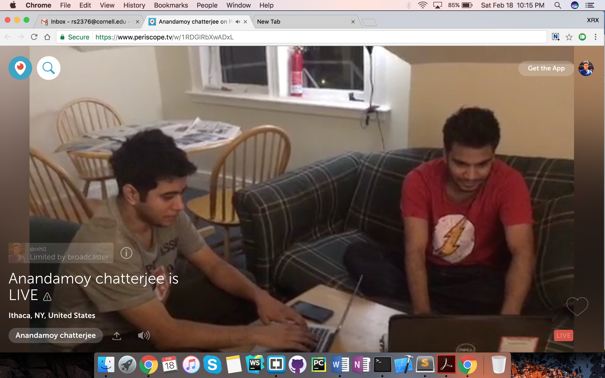

10. a. Private discussion board for users.
11. Remote access.
As I accessed Anandamoy's computer from mine, he was able to keep working normally like before. The LogMeIn client installed on his system displayed my (client) details that included the following.
Are there any warnings?
Apart from the LogMeIn client displaying the details of the remote user, there are no such warnings viz. pop-up box etc.
Can he tell it is being remotely accessed?
Yes, he can identify if he is being remotely accessed. As mentioned previously, the LogMeIn client installed on the host displays relevant information of the remote user. Additionally, the actions taken by the remote client viz. opening a new window/application reflects on the host system as well. The host user also receives an e-mail whenever a new remote user adds him/her.
How is it protected from unauthorized access?
To remotely access a system(host), a user needs to install the LogMeIn client on the host and login using his/her credentials. This step is called adding a computer. Then the user may access the LogMeIn website from a remote client, provide the credentials and access the host by providing the host's credentials.
Thus we see that an unauthorized access would require two sets of credentials viz. LogMeIn and the host itself. Also, the host needs to be in the ON state for remote access.
12. Conferencing and synchronous document sharing.
As seen in the screenshot above, video conferencing using Google Hangouts was a hassle-free experience. The Audio/Video quality was clear and comprehensible, without any lag. Hangouts allowed easy sharing of the conference so that more people can be added as needed. It also provided easy document sharing, emojis and a clean UI overall.
However, we did notice a few caveats associated with Hangouts. The A/V quality was a cut below than that of Skype. Additionally, if the two systems are too close to each other, Hangouts stops working and produces a screeching noise due to EM interference.
b. Document sharing using Google Docs.
Shared document-editing using Google Docs was another no-frills experience. Google beat its competitiors over a huge margin here. Both of us were able to edit the document real-time and could see each other's mouse pointers (color-coded). Both of the mouse pointers were active simultaneously and there was no need to take turns to edit the document.
All changes made by the authors are promptly noted down with timestamps in the Revision History section. It might happen that both the authors are working on the same part of the document and that would lead to confusion and unexpected changes. It is advised that the authors have some kind of prior confirmation on the part of the document they wish to edit. Also, changing the margins, format style might create irregularities and it is recommended that the authors agree to a specific style format font and margin layout.
13. Live broadcast using Periscope.
14. Web server and local hosting.
Apache server status report, MacOS Sierra.
Webpage on localhost.